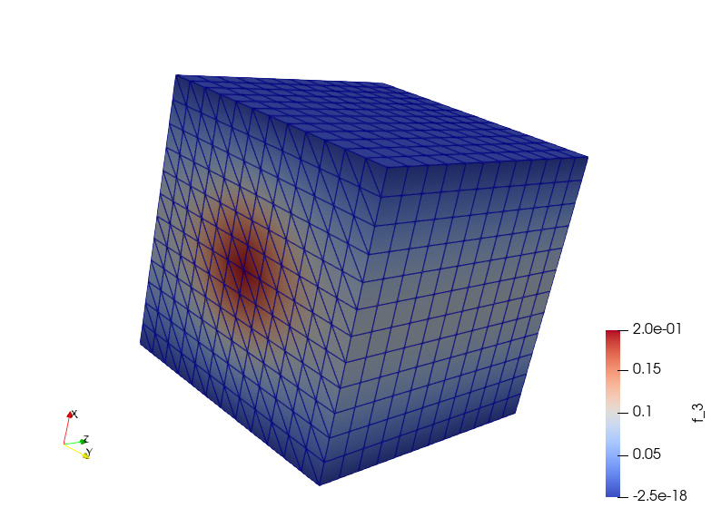

Poisson equation¶
This demo is implemented in a single Python file,
demo_poisson.py, which contains both the variational forms
and the solver.
This demo illustrates how to:
Solve a linear partial differential equation
Create and apply Dirichlet boundary conditions
Define a FunctionSpace
The solution for \(u\) in this demo will look as follows:
{kind=link}
Equation and problem definition¶
The Poisson equation is the canonical elliptic partial differential equation. For a domain \(\Omega \subset \mathbb{R}^n\) with boundary \(\partial \Omega = \Gamma_{D} \cup \Gamma_{N}\), the Poisson equation with particular boundary conditions reads:
Here, \(f\) and \(g\) are input data and \(n\) denotes the outward directed boundary normal. The most standard variational form of Poisson equation reads: find \(u \in V\) such that
where \(V\) is a suitable function space and
The expression \(a(u, v)\) is the bilinear form and \(L(v)\) is the linear form. It is assumed that all functions in \(V\) satisfy the Dirichlet boundary conditions (\(u = 0 \ {\rm on} \ \Gamma_{D}\)).
In this demo, we shall consider the following definitions of the input functions, the domain, and the boundaries:
\(\Omega = [0,1] \times [0,1]\) (a unit square)
\(\Gamma_{D} = \{(0, y) \cup (1, y) \subset \partial \Omega\}\) (Dirichlet boundary)
\(\Gamma_{N} = \{(x, 0) \cup (x, 1) \subset \partial \Omega\}\) (Neumann boundary)
\(g = \sin(5x)\) (normal derivative)
\(f = 10\exp(-((x - 0.5)^2 + (y - 0.5)^2) / 0.02)\) (source term)
Implementation¶
This description goes through the implementation (in
demo_poisson.py) of a solver for the above described
Poisson equation step-by-step.
First, the dolfinx module is imported:
import dolfinx
import numpy as np
import ufl
from dolfinx import (DirichletBC, Function, FunctionSpace, RectangleMesh, fem,
plot)
from dolfinx.cpp.mesh import CellType
from dolfinx.fem import locate_dofs_topological
from dolfinx.io import XDMFFile
from dolfinx.mesh import locate_entities_boundary
from mpi4py import MPI
from petsc4py import PETSc
from ufl import ds, dx, grad, inner
We begin by defining a mesh of the domain and a finite element
function space \(V\) relative to this mesh. As the unit square is
a very standard domain, we can use a built-in mesh provided by the
class UnitSquareMesh. In
order to create a mesh consisting of 32 x 32 squares with each square
divided into two triangles, we do as follows
# Create mesh and define function space
mesh = RectangleMesh(
MPI.COMM_WORLD,
[np.array([0, 0, 0]), np.array([1, 1, 0])], [32, 32],
CellType.triangle, dolfinx.cpp.mesh.GhostMode.none)
V = FunctionSpace(mesh, ("Lagrange", 1))
The second argument to FunctionSpace is the finite element family, while the
third argument specifies the polynomial degree. Thus, in this case,
our space V consists of first-order, continuous Lagrange finite
element functions (or in order words, continuous piecewise linear
polynomials).
Next, we want to consider the Dirichlet boundary condition. A simple
Python function, returning a boolean, can be used to define the
boundary for the Dirichlet boundary condition (\(\Gamma_D\)). The
function should return True for those points inside the boundary
and False for the points outside. In our case, we want to say that
the points \((x, y)\) such that \(x = 0\) or \(x = 1\) are
inside on the inside of \(\Gamma_D\). (Note that because of
rounding-off errors, it is often wise to instead specify \(x <
\epsilon\) or \(x > 1 - \epsilon\) where \(\epsilon\) is a
small number (such as machine precision).)
Now, the Dirichlet boundary condition can be created using the class
DirichletBC. A
DirichletBC takes two
arguments: the value of the boundary condition and the part of the
boundary on which the condition applies. This boundary part is
identified with degrees of freedom in the function space to which we
apply the boundary conditions. A method locate_dofs_geometrical is
provided to extract the boundary degrees of freedom using a
geometrical criterium. In our example, the function space is V,
the value of the boundary condition (0.0) can represented using a
Function and the Dirichlet
boundary is defined immediately above. The definition of the Dirichlet
boundary condition then looks as follows:
# Define boundary condition on x = 0 or x = 1
u0 = Function(V)
with u0.vector.localForm() as u0_loc:
u0_loc.set(0)
facets = locate_entities_boundary(mesh, 1,
lambda x: np.logical_or(np.isclose(x[0], 0.0),
np.isclose(x[0], 1.0)))
bc = DirichletBC(u0, locate_dofs_topological(V, 1, facets))
Next, we want to express the variational problem. First, we need to
specify the trial function \(u\) and the test function \(v\),
both living in the function space \(V\). We do this by defining a
TrialFunction and a
TestFunction on the
previously defined FunctionSpace V.
Further, the source \(f\) and the boundary normal derivative \(g\) are involved in the variational forms, and hence we must specify these.
With these ingredients, we can write down the bilinear form a and
the linear form L (using UFL operators). In summary, this reads
# Define variational problem
u, v = ufl.TrialFunction(V), ufl.TestFunction(V)
x = ufl.SpatialCoordinate(mesh)
f = 10 * ufl.exp(-((x[0] - 0.5)**2 + (x[1] - 0.5)**2) / 0.02)
g = ufl.sin(5 * x[0])
a = inner(grad(u), grad(v)) * dx
L = inner(f, v) * dx + inner(g, v) * ds
# Now, we have specified the variational forms and can consider the
# solution of the variational problem. First, we need to define a
# :py:class:`Function <dolfinx.functions.fem.Function>` ``u`` to
# represent the solution. (Upon initialization, it is simply set to the
# zero function.) A :py:class:`Function
# <dolfinx.functions.fem.Function>` represents a function living in a
# finite element function space. Next, we initialize a solver using the
# :py:class:`LinearProblem <dolfinx.fem.linearproblem.LinearProblem>`.
# This class is initialized with the arguments ``a``, ``L``, and ``bc``
# as follows: :: In this problem, we use a direct LU solver, which is
# defined through the dictionary ``petsc_options``.
problem = fem.LinearProblem(a, L, bcs=[bc], petsc_options={"ksp_type": "preonly", "pc_type": "lu"})
# When we want to compute the solution to the problem, we can specify
# what kind of solver we want to use.
uh = problem.solve()
The function u will be modified during the call to solve. The
default settings for solving a variational problem have been used.
However, the solution process can be controlled in much more detail if
desired.
A Function can be
manipulated in various ways, in particular, it can be plotted and
saved to file. Here, we output the solution to an XDMF file for
later visualization and also plot it using the plot command:
# Save solution in XDMF format
with XDMFFile(MPI.COMM_WORLD, "poisson.xdmf", "w") as file:
file.write_mesh(mesh)
file.write_function(uh)
# Update ghost entries and plot
uh.vector.ghostUpdate(addv=PETSc.InsertMode.INSERT, mode=PETSc.ScatterMode.FORWARD)
try:
import pyvista
topology, cell_types = plot.create_vtk_topology(mesh, mesh.topology.dim)
grid = pyvista.UnstructuredGrid(topology, cell_types, mesh.geometry.x)
grid.point_arrays["u"] = uh.compute_point_values().real
grid.set_active_scalars("u")
plotter = pyvista.Plotter()
plotter.add_mesh(grid, show_edges=True)
warped = grid.warp_by_scalar()
plotter.add_mesh(warped)
# If pyvista environment variable is set to off-screen (static) plotting save png
if pyvista.OFF_SCREEN:
pyvista.start_xvfb(wait=0.1)
plotter.screenshot("uh.png")
else:
plotter.show()
except ModuleNotFoundError:
print("pyvista is required to visualise the solution")